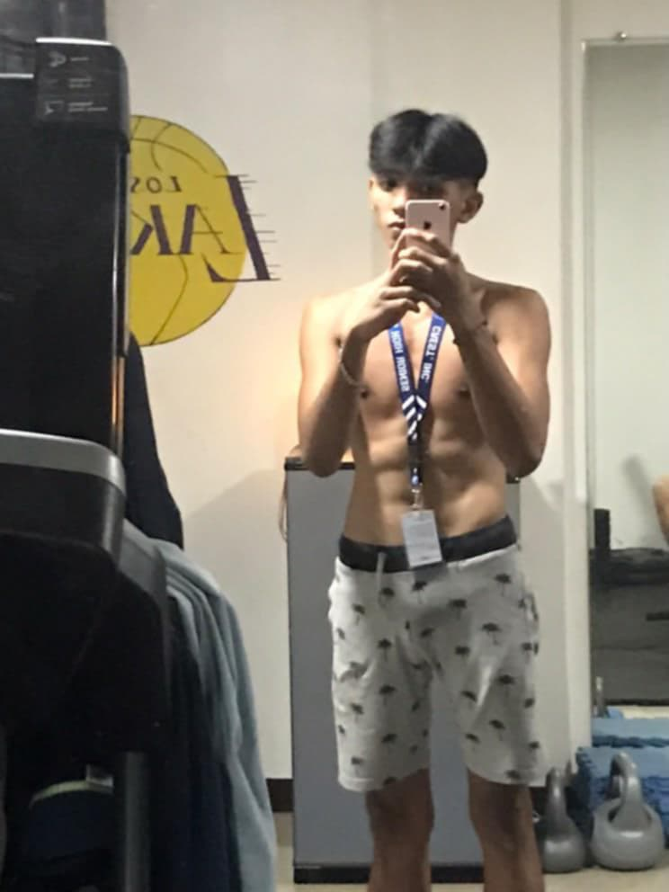

I am Quik Cler Lim and also a student and one of Milan Milan Milendo's boxers in 2023-2024. Before he recruited me as a member, I already had 4–5 years of experience. I was preparing to enter the fight under my coach, but my parents did not agree because they knew how difficult it would be for me inside the ring. My father had already tried it, which is why I respected their decision. Instead of fighting, I decided to continue training and learning. These decisions made by my parents helped me think carefully before making plans. While I may not consider myself the best, I recognize that I bring value and potential. I am committed to continuous growth, always striving to improve, and remaining open to learning new things. Boxing has taught me much more than physical strength; it has shaped my character, discipline, and perseverance. Every training session is a challenge to push past my limits and grow stronger both mentally and physically. I have learned the importance of patience, as success in this sport does not come overnight. It requires dedication, resilience, and the willingness to face setbacks without losing hope. Though I am still early in my journey, I am motivated by the possibility of what I can achieve. Being part of Milan Milan Milendo's team has given me a sense of belonging and purpose, surrounded by mentors and teammates who inspire me to be better. I am grateful for their guidance and the support from my family, who remind me that the journey is as important as the destination. Looking forward, I aim to keep honing my skills and gaining experience so that when the time is right, I will be ready to step into the ring with confidence. More than winning, I want to represent hard work, respect, and sportsmanship. I believe that with continuous effort and learning, I can reach my potential and make a meaningful impact in the sport I love.
I chose Information Technology because I’ve always been passionate about creating games. I used to develop games inspired by Minecraft and Roblox, and through that experience, I discovered how much I enjoy building virtual worlds and bringing ideas to life. Pursuing IT is the next step for me to enhance my skills in programming and game development. I’m also eager to gain deeper knowledge of how games are created, from design to coding, and I believe IT provides the tools and foundation to do that professionally. Beyond just game creation, I’m fascinated by the problem-solving and creativity involved in software development. IT is a constantly evolving field, which means there will always be new technologies and challenges to explore. This constant change excites me because it encourages continuous learning and adaptation—qualities I value deeply. My goal is to contribute to innovative projects that inspire players and make a meaningful impact in the gaming industry. I want to create experiences that are not only fun but also engaging and memorable, where players can immerse themselves fully in the virtual world. I’m particularly interested in how storytelling, graphics, and interactivity combine to create compelling gameplay that resonates with diverse audiences. In addition to technical skills, I look forward to developing teamwork and communication abilities, since game development often requires collaboration between designers, programmers, artists, and testers. I believe that working in a multidisciplinary environment will help me grow both professionally and personally. Ultimately, I see IT not just as a career path, but as a way to express creativity and solve real-world problems through technology. I’m committed to staying curious, working hard, and embracing the challenges ahead. With a strong foundation in IT, I hope to push the boundaries of what games can achieve and contribute to the future of interactive entertainment.
After careful consideration, I chose to pursue a career in Information Technology, not because of its popularity, but because of my genuine interest in the field and its significant value in today’s world. Technology is embedded in every aspect of modern life, and I am eager to understand the systems and processes that operate behind the scenes. What fascinates me most about IT is how it connects people, businesses, and communities across the globe. From the software that powers everyday devices to complex networks that enable communication and data sharing, IT plays a crucial role in shaping how we live and work. I want to be part of this dynamic field where innovation constantly transforms the way we solve problems and create opportunities. Moreover, IT offers endless possibilities for creativity and critical thinking. I am excited by the challenge of designing solutions that are both efficient and user-friendly. Whether it’s developing applications, managing databases, or enhancing cybersecurity, each area presents unique problems that require innovative approaches and technical expertise. I am also motivated by the impact technology can have on improving lives—whether through education, healthcare, or environmental sustainability. By gaining knowledge and skills in IT, I hope to contribute to projects that make a positive difference in society and help build a more connected and accessible world. Finally, I see IT as a field that demands lifelong learning, and I embrace that challenge wholeheartedly. As technology evolves rapidly, staying updated and adaptable will be key to success. I am committed to continuous growth and eager to explore new advancements that will shape the future.